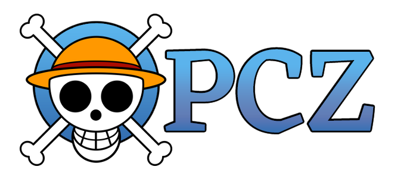

MANGÁ
ÚLTIMO LANÇADO
TODOS OS VOLUMES
ANIME
ÚLTIMO LANÇADO
TODOS OS EPISÓDIOS
PERSONAGENS
MONKEY D. LUFFY
Monkey D. Luffy, o capitão da tripulação do Chapéu de Palha. Aspira ser o Rei dos Piratas, quando criança consumiu a Gomu-Gomu no Mi, seu corpo assumiu as propriedades da borracha, tornando-o essencialmente um homem de borracha. Embora Luffy prontamente arrisque sua vida para preservar seu estilo despreocupado de aventura, este capitão não tem intenção de chutar o balde, seus amigos significam tanto para ele quanto ele para eles.
RORONOA ZORO
O espadachim da Tripulação do Chapéu de Palha. Quando criança, Zoro prometeu a sua amiga de infância que se tornaria o maior espadachim do mundo e, para isso, se dedica a esquemas de treinamento exagerados e desafiando adversários fortes. Zoro é facilmente reconhecível pelas três katanas que carrega e seu estilo de luta com três espadas. Talvez o único golpe contra suas habilidades seja seu fraco senso de direção.
NAMI
A navegadora da Tripulação do Chapéu de Palha. Utilizando seu conhecimento incomparável de navegação marítima, ela guia o navio com segurança nas tempestades mais severas. Nami ama riquezas; a mera menção de tesouro faz seus olhos brilharem, e quaisquer recompensas prometidas a ela devem ser pagas prontamente e integralmente. Quando ela usa seu Socery Clima Tact no campo de batalha, seus ataques são tão imprevisíveis e potentes quanto o clima. Seu sonho é desenhar o mapa mundi.
USOPP
O atirador da Tripulação do Chapéu de Palha. Usopp saiu de casa para se tornar um bravo guerreiro do mar, seguindo os passos de seu pai pirata que ele idolatrava. Embora o jovem exiba frequentes ataques de covardia e negatividade, seu tiro é sempre certeiro. Além de lutar com estilingues que ele mesmo construiu com orgulho, seu arsenal contém uma infinidade de mentiras, ostentações e fanfarronices destinadas a mexer com a cabeça de seus inimigos.
VINSMOKE SANJI
O cozinheiro da Tripulação do Chapéu de Palha. Sanji juntou-se à tripulação para encontrar All Blue, um mar lendário que dizia conter todos os peixes e ingredientes de todos os mares, o sonho de todo chef. Reservando as mãos para cozinhar, o pirata suave conta com um trabalho de pés fantástico e chutes poderosos para derrubar os inimigos. Além de praticar a arte culinária, sua outra grande paixão na vida são as mulheres. Seu código de cavalheirismo é tão forte que ele sacrifica a própria vida para proteger as mulheres.
TONY TONY CHOPPER
O médico da Tripulação do Chapéu de Palha. Chopper é uma rena que ganhou características humanas depois de comer a Hito-Hito no Mi - Modelo Humano. Seu zelo em ser médico se deve, em parte, a dar continuidade ao legado do homem que o salvou. Tanto curioso quanto tímido sobre o mundo ao seu redor, quando se trata de batalha, Chopper tem muitas transformações corporais à sua disposição, cada uma com suas próprias especializações de combate. Seu Sonho é encontrar a cura para todas as doenças do mundo.
NICO ROBIN
A arqueóloga da Tripulação do Chapéu de Palha. Robin está em uma missão para encontrar os Real Ponegliffs, artefatos nos quais as verdades sobre o mundo e o século perdido foram esculpidas. Usuária da Hana-Hana no Mi, ela pode fazer florescer membros em qualquer parte de seu corpo ou dos inimigos e semear o campo de batalha com um belo caos. Robin sempre se comporta com a postura de uma estudiosa, mas também pode fazer piadas macabras quando você menos espera.
FRANKY
O carpinteiro e inventor da Tripulação do Chapéu de Palha. Franky é o carpinteiro por trás do navio do bando, o Thousand Sunny. Se alguém olhar além de sua propensão ao exibicionismo, encontrará um homem que simpatiza com os outros, um doce cujos olhos derramaram muitas lágrimas masculinas. Ele mexeu com seu corpo ao longo de sua vida, atualizando-o com várias armas e funções, transformando-se efetivamente em um ciborgue.
BROOK
O músico da Tripulação do Chapéu de Palha. Muito tempo atrás, antes de se tornar um homem esqueleto, Brook e sua própria tripulação fizeram amizade com o Baleia Laboon. Depois que Brook faleceu, ele foi ressuscitado pela Akuma no Mi que consumiu em vida, a Yomi Yomi no Mi, mas quando sua alma localizou seu corpo, a carne já havia dado lugar aos ossos. Agora ele viaja com os Chapéus de Palha para um dia se reunir com Laboon. Um brincalhão jovial que levanta o ânimo das pessoas ao seu redor com sua música, Brook é também talentoso em combate, derrubando inimigos em um piscar de olhos com sua espada ou com sua guitarra, que canaliza o poder de sua fruta por meio da música e lhe concede o poder da manipulação de almas.
JINBEI
O timoneiro da Tripulação do Chapéu de Palha. Jinbei, também conhecido como Primeiro Filho do Mar, ou Cavaleiro do Mar, é um homem-peixe tubarão-baleia cuja compreensão das correntes marítimas tornou a jornada de seus amigos um passeio mais suave, embora não necessariamente menos perigosa. Como um especialista em karatê tritão, ele pode facilmente virar a maré da batalha. As pessoas em sua ilha natal o chamam de chefe em respeito por sua disposição de comando e honra. Tem como um de seus objetivos ajudar a acabar com a discriminação dos homens-peixe.